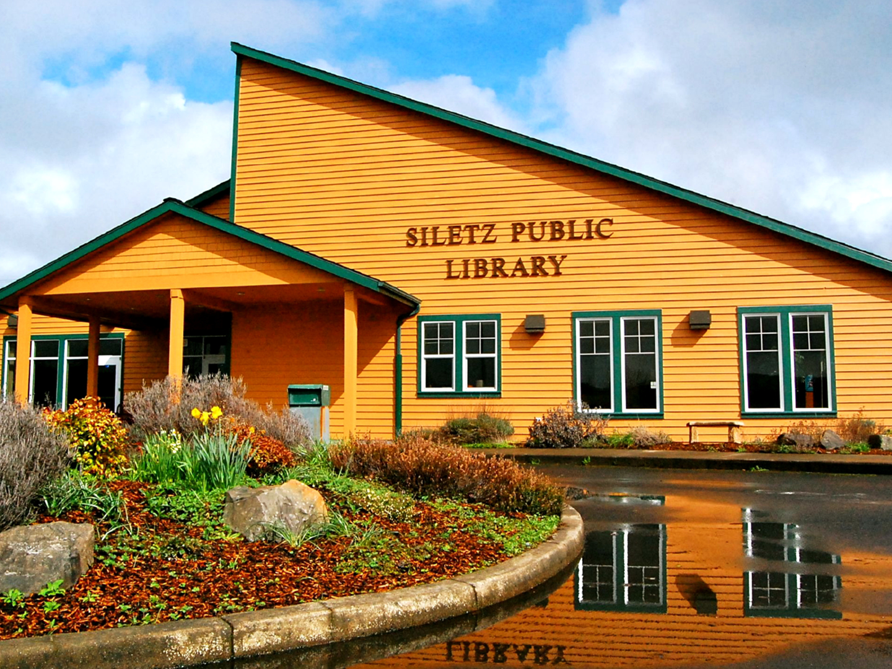
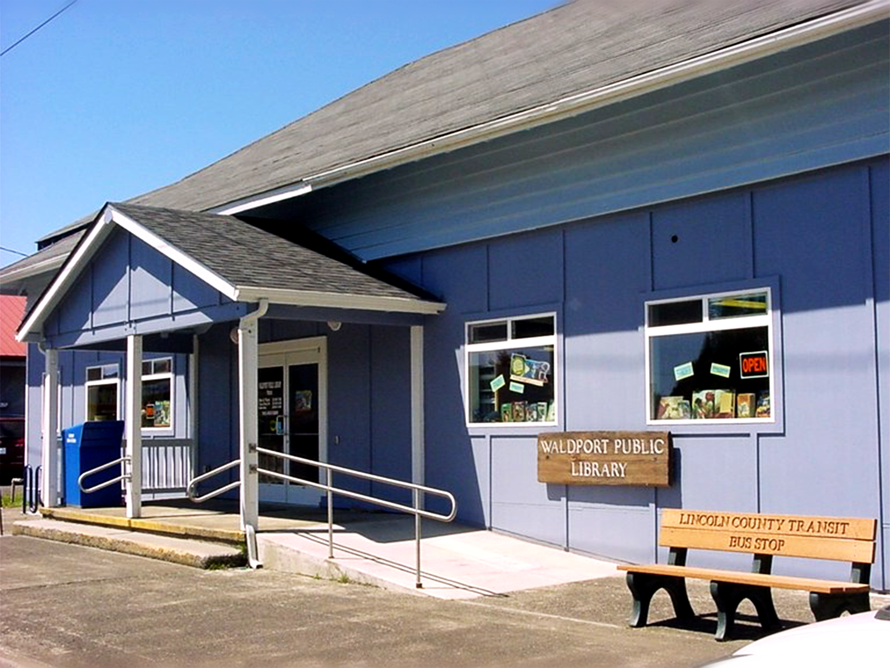
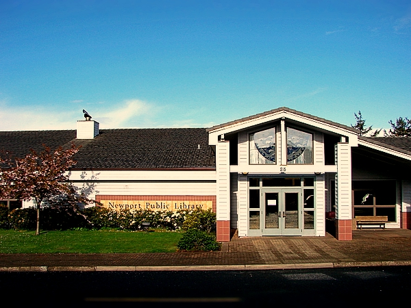
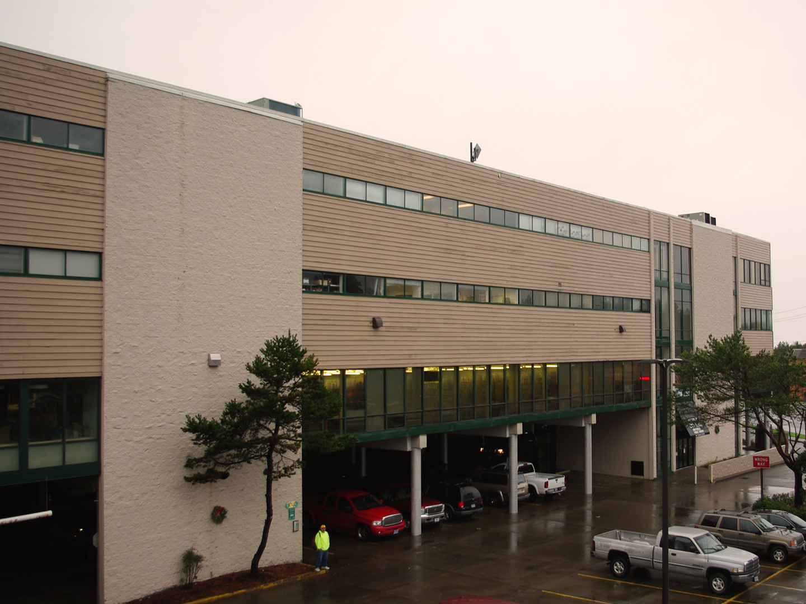

This section describes the residents of Lincoln County who currently use its libraries. Each branch represents a
different community with various geographies, demographics, services, and collections. Unless otherwise noted, patrons
included in this portion in the profile are LCLD patrons living outside the county’s incorporated areas. Service area
populations and registered patron totals are taken from the 2018-2019 Oregon Public Library Statistical Report. Newport
Public Library’s registered patron total is updated to exclude patron accounts that had expired before April 2020.

Siletz Public Library
Toledo Public Library

Waldport Public Library

Newport Public Library

Driftwood Public Library
The maps below show how LCLD patrons are dispersed throughout the county, where they live, and which libraries they use. Dist_to_Library shows how far patrons must travel to use a public library. LCLD_Users% shows how many library patrons are LCLD patrons by library.